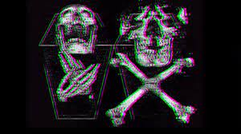

SOLITARIO
¿Os imagináis un artista triunfando en pleno 2020 sin dar la cara en redes sociales? ¿Y sin videoclips en sus temas? Pues existe y es de Málaga.
Bajo el aka de Solitario, éste artista continúa abarrotando de contenido su canal de Youtube con un sonido no apto para todos los paladares.
Se define como un artista que lleva «una vida mierda y hago arte con toda esa mierda, inicialmente condicionada por la Fobia Social»,
dejando claro que lo que hace «no es música. El que quiera oír música que se vaya a la discoteca».
Además de su cuenta de Youtube, solo cuenta con Twitter e IG oficial, pero ninguna de éstas encontrarás imágenes de su cara.
Un artista que contradice la tendencia actual en un panorama donde parece que la música se consume por los ojos igual que por los oídos.
El compañero Karl ‘Low-Q’ Morales de Radio Callejón Urbano, ha realizado una reseña en la que analiza uno de los últimos temas del artista: ‘Maleducado‘.
Solitario es un rapero underground originario de Málaga, España.Nació el 08 de Octubre del 1996.
Sus comienzos en la música fueron en 2014, haciendo colaboraciones con otros chavales que al igual que el,
iniciaban en la música. Algunos de sus temas destacables durante la etapa mencionada son:
-Balas caidas ft Ryde.
-Vida perra ft Kofi.
-Heridas ft Knefest.
-Miedos ft Jhonny.
-Cárcel mental ft Miranda.
No pasó mucho tiempo para que Solitario destacara no solo en el género sino en la música,
esto debido a sus letras profundas y con verdades crudas que mostraban el rumbo que tomaría.
Actualmente la mayor parte de sus obras que grabó entre 2014 y finales del 2015 están ocultas en su canal de YouTube,
ya que según el propio artista, estas no representan lo que en realidad siente y eso que desea expresar
y son más bien lo que el llama "garabatos" pero sin duda alguna con ese típico enfoque de la vida.